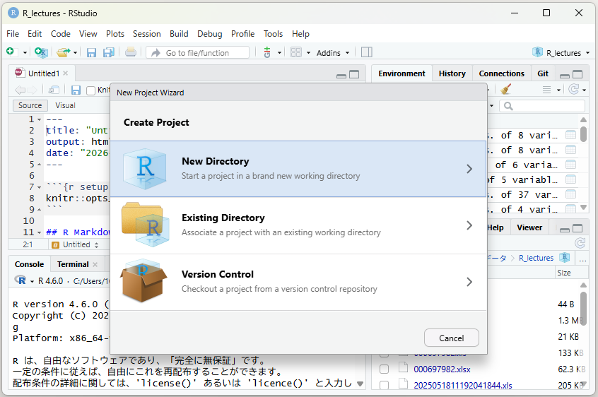

はじめに
プロジェクトとパッケージ
作業場所をひとまとめにする「プロジェクト」と、道具箱にあたる「パッケージ」。この2つを用意すれば準備は終わりです。
プロジェクトをつくる
次に「プロジェクト」を立ち上げましょう。
RStudioの「プロジェクト」は、ファイルやフォルダを整理し、作業環境を管理しやすくするための機能です。データ分析や可視化を進めるとき、分析のためのコードや文書があちこちに散らばってしまうと、どこで何を編集すればいいか分からなくなりがちです。そこで役立つのが「プロジェクト」で、関連するファイルや設定をひとまとめにして管理できます。
プロジェクトを使う最大のメリットは、分析環境の再現性が高まる点です。たとえば「テーマ別」「月ごと」など、記事の枠組みに合わせてプロジェクトを切り分ければ、それぞれのフォルダ内だけでコードやデータをやり取りすることになるため、混乱を防ぐことができます。さらに、プロジェクトごとに作業スペースが独立しているので、一つのプロジェクトを閉じて別のプロジェクトを開けば、作業環境がきれいに切り替わるのも便利です。

新しくプロジェクトをつくるときには、RStudioの画面左上にある「File」から「New Project」→「New Directory」と進み、また「New Project」を選べば、新しいフォルダでそのプロジェクトを始めることができます。既存のフォルダでプロジェクトを始めたい場合には、「New Directory」ではなく「Existing Directory」を選びましょう。「Version Control」はGitHubと連携するためのものらしいのですが、ここではひとまず忘れてください（実は私自身が使いこなせていません……）。
また、すでに作ったプロジェクトは、当該フォルダの中にある .Rproj という拡張子のファイルをダブルクリックすれば開くことができます。
フォルダの分け方
プロジェクトのフォルダの中にも子フォルダをつくって、いろんなファイルを整理しておきます。たとえばこんな感じ。
人口分析/ ← プロジェクトのフォルダ
├── 人口分析.Rproj ← これをダブルクリックするとプロジェクトが開く
├── 分析.Rmd ← 書いたコード
├── data/ ← もとのデータ（絶対に手で書き換えない）
│ ├── 人口データ2020.csv
│ └── 人口データ2015.csv
├── download/ ← ウェブから落としてきたファイル
└── output/ ← 出力したcsvやグラフ大事なのは、出発点になるデータ（上記の構成ではdata と download のなかに入っています）は手で触らないということです。加工はすべてコードのなかでやる。こうしておけば、あとで「この数字、もとデータではどうなってたっけ」と確かめたいときに、いつでも出発点に戻れます。
tidyverseを入れる
では、いよいよ作業に入りましょう……と言いたいところなのですが、その前にもうひとつだけ。データの基本的な処理に使われるtidyverse（タイディバース）と呼ばれるパッケージをインストールします。
install.packages("tidyverse")いちどインストールすると、次にRStudioを開いたときからはやらなくて済むようになります。また、実際に使うときには、そのパッケージを呼び出してやる必要があります。
library(tidyverse)こちらの命令は、次にRStudioを開いたときにも、改めてやり直さなくてはいけません。
そもそもパッケージとは何か
Rには基本機能のほかに、有志たちが開発したさまざまな道具があります。その道具を束ねたものがパッケージと呼ばれるもので、きれいな表を出力したり、行政機関が持っているデータを呼び出したり、地図データを読み込んで加工したりといった、多種多様な専門的用途に合わせて開発されています。「こんなことがやりたいな」と思ってググってみたら、そのためのパッケージが見つかった、なんてことがよくあります。
tidyverseはあまたあるパッケージの中でも、データ分析をする人たちの間でとくによく使われているものです。これさえあれば、データを読み込んで、分析して、グラフを描いて……といった作業のほとんどができてしまいます。dplyrやggplot2など、分析によく使われるパッケージを集めた「パッケージの詰め合わせ」のようなパッケージで、たとえるなら十徳ナイフみたいな感じ、でしょうか。開発者のハドリー・ウィッカムさんはその界隈で神とあがめられています。
RStudioでデータ分析をするときは、まずはじめに library(tidyverse) を実行する、と覚えておいてください。
この講座ではほかに、Excelを読む readxl、ウェブを読む rvest、ファイルを落とす httr、いわゆる神エクセルを解体する tidyxl と unpivotr を使います。あとは日付や時間に関するデータを扱うときに便利なlubridateも使うかな。必要になったところでその都度インストールしていきます。
準備は以上です。次からはいよいよデータを触ります。